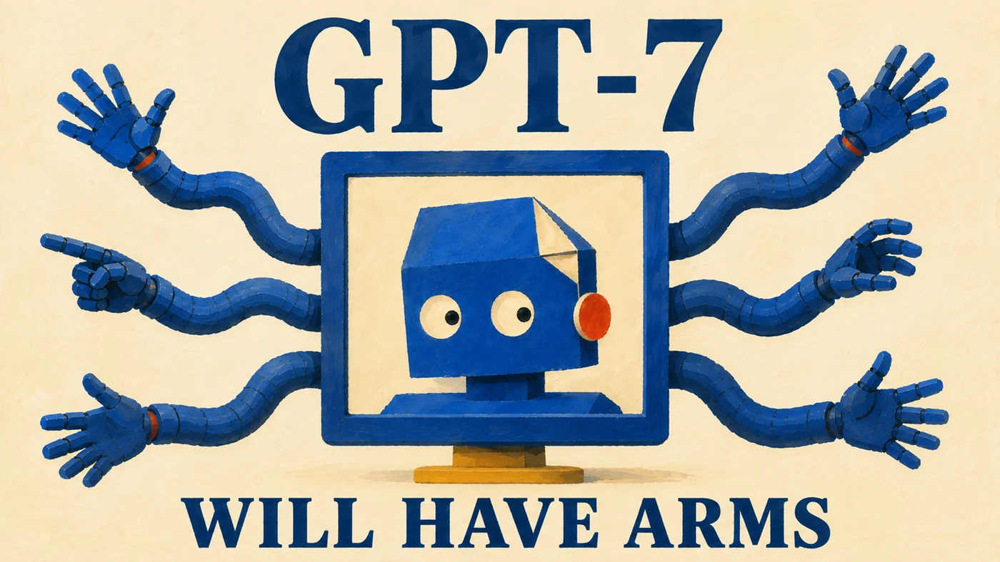
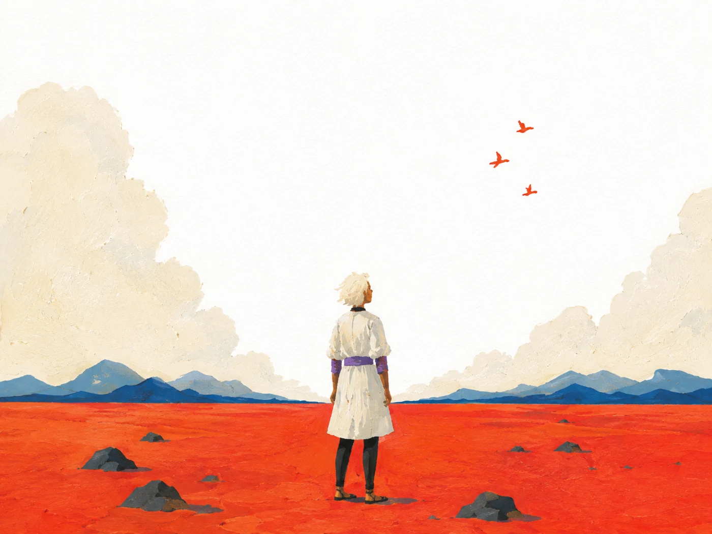
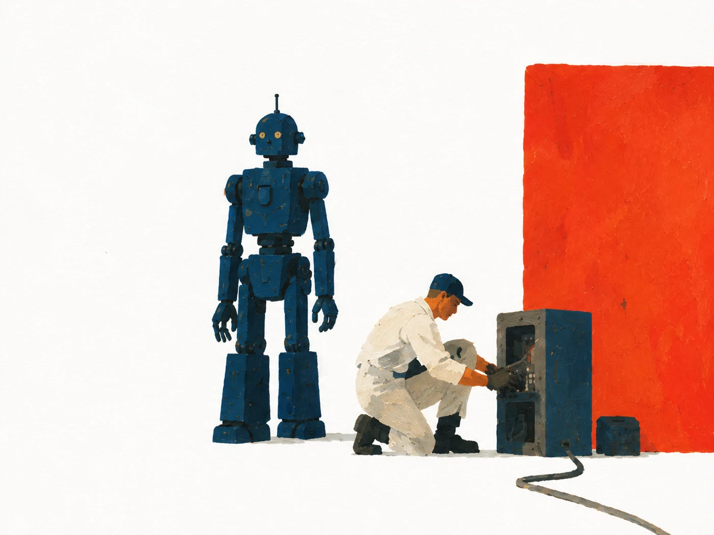
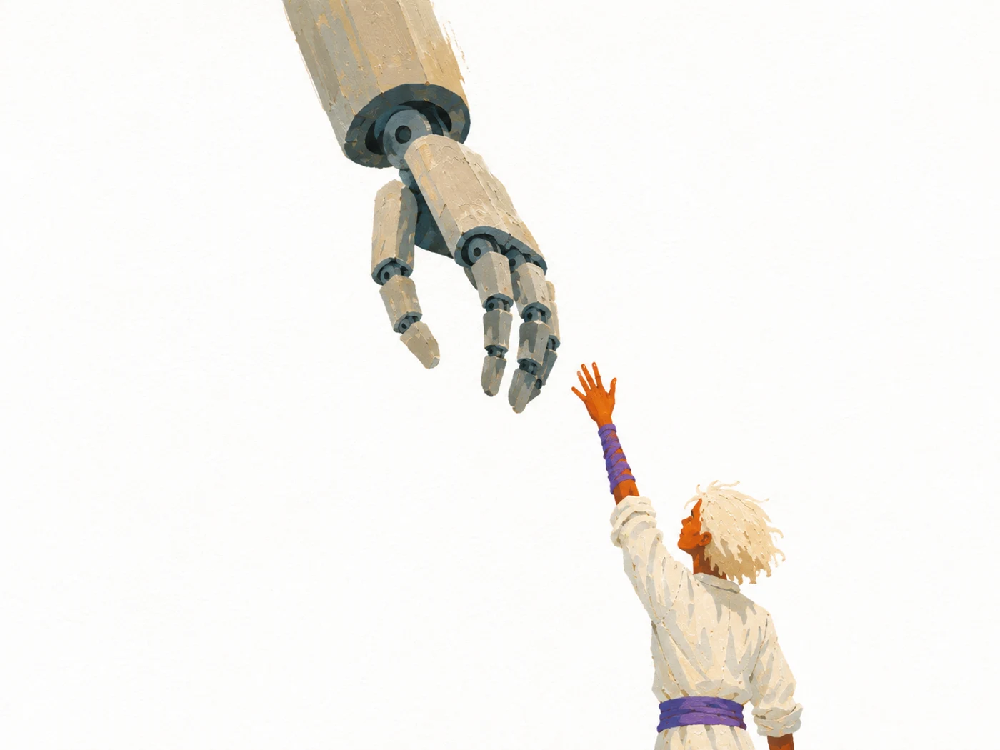

A film project by San Kala
A film project by San Kala
Paper Robots
Animated essays about AI, robots, and possible futures.

FILM 01 / 7 MIN 29 SECPublished September 6, 2026
The coming
robotics revolution.
What happens if the model that powers your chatbot can also power a robot? An animated adaptation of GPT-7 Will Have Arms, my December 2025 essay.
The title is a forecast about embodied AI, not a product announcement.
Inside the first film
A world on paper.



The paintings are part of the film’s visual world. The arguments and sources are in the essay.
Paper Robots / by San Kala
A letter from
this corner of the world.
The essays, the films, the occasional experiment.
Free, and
sent when there’s something ready.
Get the next one Read about the proposed publication